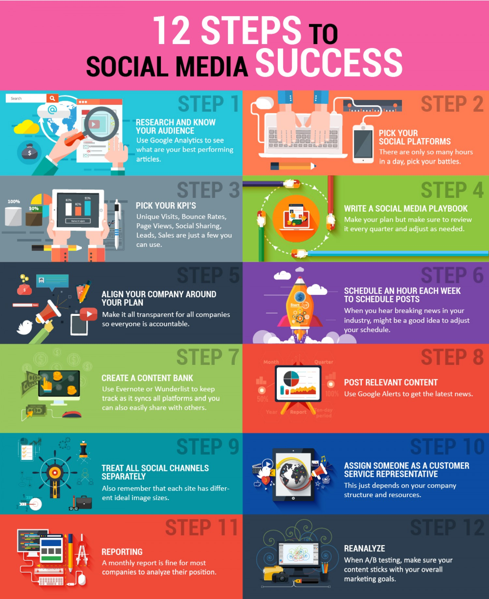

Empowering Small Businesses Through Social Media
In today’s digital landscape, social media is a game-changer for small businesses. At [Your Company Name], we specialize in harnessing the power of social media to help small businesses thrive and grow.
Why Social Media is Essential for Small Businesses
Social media offers unparalleled opportunities for small businesses to reach new audiences and build lasting relationships.Expand your reach and ensure your brand is seen by potential customers.Engage with your audience, foster relationships, and create a community of brand advocates.Use targeted campaigns and promotions to attract new customers and boost sales. Analyze your audience’s behavior and preferences to tailor your strategies effectively.Level the playing field with cost-effective marketing strategies that reach your ideal customers.
Our Services
- Social Media Strategy: Craft a customized plan to achieve your business goals and stand out in the crowded social media landscape.
- Content Creation: Develop engaging and relevant content that resonates with your audience and showcases your brand’s personality.
- Profile Management: Maintain and grow your social media profiles with regular updates, interactions, and community engagement.
- Advertising Campaigns: Launch targeted ads that drive traffic, generate leads, and increase sales.
- Performance Analytics: Track and analyze your social media performance to continuously improve your strategy and achieve better results.
Social Media Marketing Mistakes
Social media marketing mistakes often arise from insufficient planning and understanding of the target audience. One common error is posting content that lacks relevance or fails to resonate with followers, which can lead to disengagement. Additionally, brands may neglect to interact with their audience, missing opportunities for building meaningful relationships and addressing customer concerns. Inconsistency in branding and messaging can also confuse potential customers, undermining trust and recognition. Over-focusing on self-promotion rather than providing valuable content can alienate followers and diminish the effectiveness of campaigns. To avoid these issues, businesses should develop a strategic plan, engage actively with their audience, and continuously analyze and adapt their approach based on performance metrics.